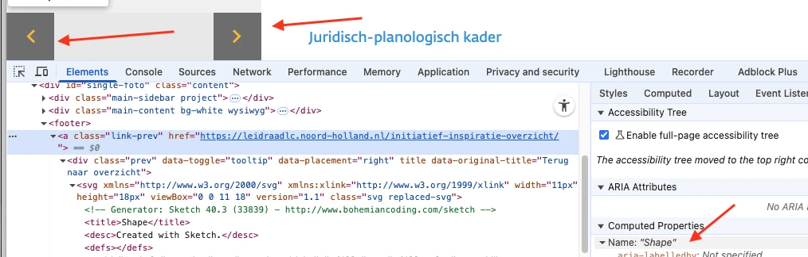
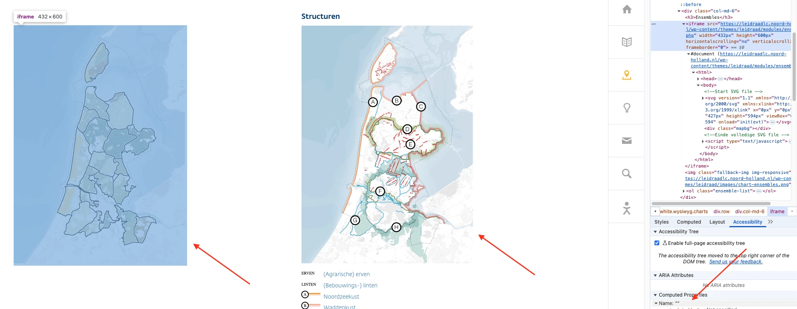
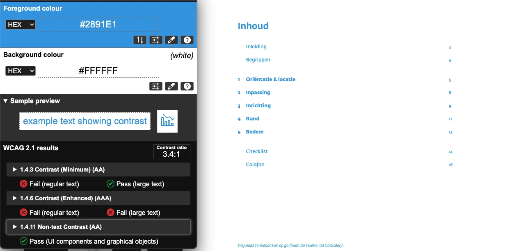
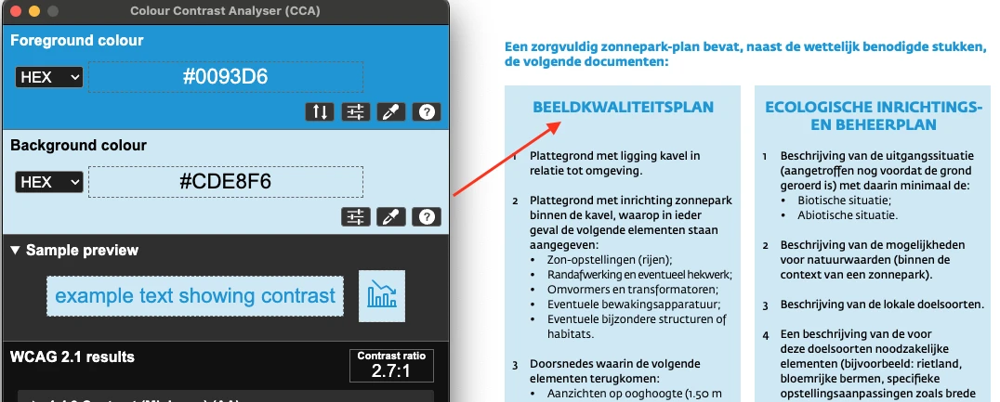
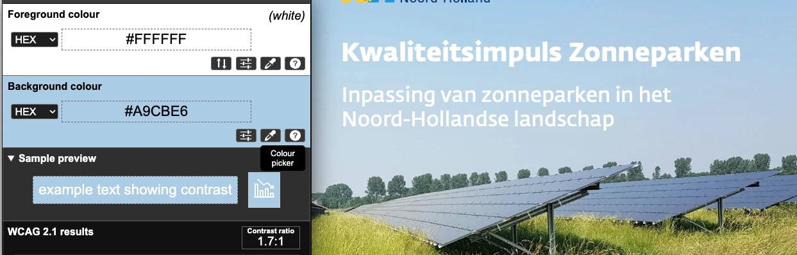
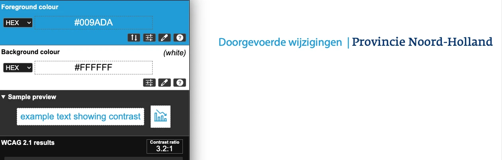
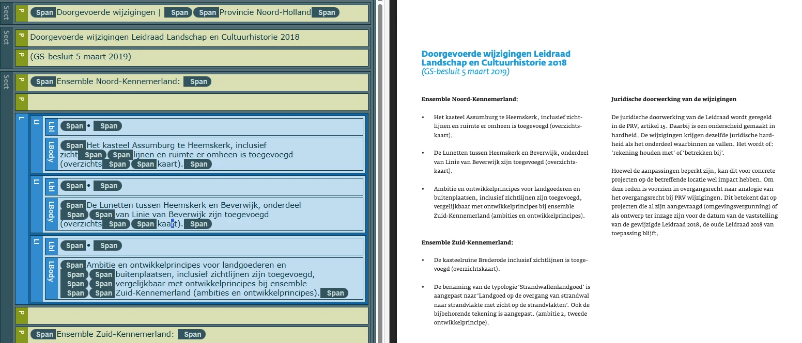

Audit digitale toegankelijkheid van website leidraadlc.noord-holland.nl
Samenvatting
Wij hebben de website leidraadlc.noord-holland.nl onderzocht tussen 10 en 21 oktober 2025. Op dit moment zijn 38 van de 55 succescriteria als voldoende beoordeeld. In dit rapport lees je wat er bij de overige 17 nog fout gaat, en hoe je dat kunt verbeteren.
De pagina's missen het lang-attribuut op het html-element.
Als dit attribuut niet aanwezig is, kan voorleessoftware de pagina niet in de correcte taal voorlezen. De software weet dan niet wat de primaire taal van de pagina is.
Oplossing:
Zorg dat het lang-attribuut aanwezig is op het html-element, en dat dit attribuut de taalcode bevat van de taal van de pagina, bijvoorbeeld lang=”nl” voor Nederlands.
Deze pagina heeft geen skip-link.
Er moet een manier zijn om delen van een pagina over te slaan, zoals het navigatiemenu en andere elementen die op meerdere pagina’s terugkomen. Je gebruikt hier een skiplink voor. Daarmee kun je vaste blokken met herhalende inhoud overslaan. Een skiplink moet de eerste link op de pagina zijn. Deze link mag verborgen zijn, maar moet zichtbaar worden zodra hij focus krijgt.
Oplossing:
Voeg een skiplink toe waarmee bezoekers herhalende delen van de pagina over kunnen slaan.
Zorg dat de skiplink:
de eerste link op de pagina is;
visueel verborgen is, maar zichtbaar wordt bij toetsenbordfocus;
naar de hoofdcontent van de pagina springt als de bezoeker de link activeert.
Het logo bovenaan de website is opgenomen met behulp van een img-element, maar het alt-attribuut ontbreekt. Het logo fungeert als een link en de tekstalternatief ontbreekt, waardoor de link ontoegankelijk is. Als gevolg hiervan heeft de link geen inhoud (dit leidt ook tot het niet voldoen aan succescriteria 2.4.4 en 4.1.2).
Een img-element moet altijd een alt-attribuut hebben.
Oplossing:
Voeg het alt-attribuut toe aan het img-element, bijvoorbeeld alt=”Provincie Noord-Holland”.
#3 - Link bestaat uit een afbeelding, linkdoel is onbekend
Impact: MediumType: ContentWCAG: 2.4.4EN: 9.2.4.4
Het logo bovenaan de website werkt als een link, maar heeft geen alt-attribuut, waardoor de afbeelding niet zichtbaar is voor schermlezers. Daardoor heeft de link geen inhoud en is het onduidelijk naar welke bestemming de link verwijst. Dit zorgt ook voor afkeur op succescriterium 4.1.2, want de link heeft hierdoor ook geen toegankelijke naam.
Oplossing:
Je kunt dit oplossen door de link te voorzien van toegankelijke tekstuele inhoud. Je kunt dit doen door het alt-attribuut toe te voegen aan het img-element binnen de link, bijvoorbeeld alt=”Provincie Noord-Holland”.
Het logo bovenaan de website fungeert als een link, maar heeft geen toegankelijke naam.
Hierdoor begrijpen bezoekers die een schermlezer gebruiken niet wat de bestemming of de functie is van de link.
Oplossing:
U kunt de toegankelijke naam opgeven door het alt-attribuut toe te voegen aan het img-element binnen de link, bijvoorbeeld alt=”Provincie Noord-Holland”.
#5 - Zichtbare linktekst komt niet terug in toegankelijke naam
Impact: GrootType: TechniekWCAG: 2.5.3EN: 9.2.5.3
De zichtbare tekst van het logo ("Provincie Noord-Holland") is niet opgenomen in de toegankelijke naam ervan.
Als de zichtbare tekst van een link niet voorkomt in de toegankelijke naam, kan de link niet met spraakbediening worden bediend. De commando’s die de bezoeker uitspreekt door de tekst van de link voor te lezen, zullen de link dan niet activeren.
Oplossing:
Voeg de zichtbare tekst toe aan de toegankelijke naam, bij voorkeur aan het begin. In dit geval voegt u het alt-attribuut toe aan het img-element binnen de link, bijvoorbeeld alt=”Provincie Noord-Holland”.
#6 - Knop heeft niet de juiste toegankelijke rol
Impact: GrootType: TechniekWCAG: 4.1.2EN: 9.4.1.2
De knop 'Menu' bovenaan de pagina en de knop 'Sluiten', die verschijnt wanneer het menu wordt geopend, hebben niet de juiste toegankelijke rol.
Elk HTML-element heeft standaard een rol. Dit betekent dat het element bepaalde eigenschappen en functies heeft om informatie aan de bezoeker te geven of om informatie van de bezoeker te ontvangen. De rol bepaalt dus wat het element doet. Schermlezers en andere hulpmiddelen moeten de correcte rol van elk element op een webpagina kennen. Zo kunnen ze op een slimme manier met het element omgaan en aan de bezoeker uitleggen wat het element doet.
Oplossing:
Zorg dat de knop de juiste toegankelijke rol heeft. Gebruik het button-element.
#7 - Interactief element kan niet met het toetsenbord worden bediend
Impact: GrootType: TechniekWCAG: 2.1.1EN: 9.2.1.1
De knop 'Menu' bovenaan de pagina en de knop 'Sluiten' zijn niet toegankelijk via het toetsenbord.
Alle interactieve elementen, dus ook links en knoppen, moeten ook met alleen het toetsenbord te bedienen zijn.
Oplossing:
Zorg dat alle interactieve elementen met het toetsenbord kunnen worden bediend.
#8 - Decoratieve afbeelding is niet verborgen voor schermlezers
In het menu staan decoratieve afbeeldingen voor elk item. Het huispictogram heeft bijvoorbeeld de tekstalternatief 'Fill 89' en het boekpictogram naast 'Introductie' heeft de tekstalternatief 'Fill 232'.
Een decoratieve afbeelding geeft geen extra informatie en moet daarom verborgen worden voor schermlezers.
#### Oplossing:
Dit kan op verschillende manieren. Een `svg`-element kun je bijvoorbeeld verbergen door het `title`-element leeg of weg te laten.
### Actieve link alleen aan kleur te herkennen
In het hoofdmenu wordt de actieve link (de link naar de huidige pagina) alleen aangegeven door een andere tekstkleur.
Dit kan een probleem zijn voor kleurenblinde of slechtziende bezoekers. Zij kunnen de kleuren mogelijk niet onderscheiden, en zien dus niet welke link actief is en welke niet.
Oplossing:
Zorg ervoor dat actieve links ook nog op een andere manier te herkennen zijn, bijvoorbeeld door ze te onderstrepen of vetgedrukt te maken.
In het hoofdmenu heeft de actieve link (naar de huidige pagina) een duidelijk visueel uiterlijk, maar dit onderscheid is niet aanwezig in de code. Bezoekers die de pagina laten voorlezen, hebben daardoor geen toegang tot deze informatie.
Oplossing:
Zorg voor een andere manier om deze informatie over te dragen, zodat ook slechtziende of blinde bezoekers dit kunnen begrijpen. Voeg bijvoorbeeld aria-current="true" toe aan de actieve link. Andere opties zijn een h1-kop met dezelfde tekst als het menu-item, of het gebruik van de paginatitel (title).
#10 - Kleurcontrast van tekst is te laag (tekst kleiner dan 24px en niet vetgedrukt)
In het hoofdmenu staat grijze tekst (`#A4A4A4`) op een witte achtergrond. De kleurcontrastverhouding is te laag: 2,5:1. Het actieve item heeft gele tekst (`#FBBA22`) op een witte achtergrond, wat ook onvoldoende contrast biedt (1,6:1). De grijze tekst "v1.22" (`#D6D6D6`) op de witte achtergrond heeft een contrastverhouding van 1,5:1.
#### Oplossing:
Deze tekst is kleiner dan 24px en niet vetgedrukt, daarom moet het contrast minimaal 4,5:1 zijn. Op deze pagina staat een instructie die uitlegt hoe je kleurcontrast kan testen: [https://properaccess.nl/hoe-test-ik-kleurcontrast/](https://properaccess.nl/hoe-test-ik-kleurcontrast/).
### Kleurcontrast van informatieve iconen is niet voldoende
In het hoofdmenu staan grijze pictogrammen (#A3A3A3) op een witte achtergrond. De kleurcontrastverhouding is te laag: 2,4:1. Het actieve pictogram is geel (#FCBA23) op een witte achtergrond, wat ook onvoldoende contrast biedt (1,7:1) en daarmee niet voldoet aan de vereiste 3,0:1 voor grafische elementen die informatie overbrengen. Als de tekst die bij de iconen staat gaat voldoen aan de contrasteisen, zouden deze iconen decoratief zijn en daarmee niet per se aan de contrasteisen te hoeven voldoen, maar op dit moment geven de iconen wel informatie, omdat de tekst niet aan die eisen voldoet.
Oplossing:
Zorg dat de iconen voldoende contrast hebben.
#11 - Onzichtbaar element krijgt toetsenbordfocus
Impact: GrootType: TechniekWCAG: 2.4.3EN: 9.2.4.3
Wanneer de pagina op kleinere schermen wordt bekeken, komt de toetsenbordfocus op een onzichtbaar interactief element na het logo terecht.
De toetsenbordfocus mag niet terechtkomen op onzichtbare interactieve elementen (links, knoppen, formuliervelden). Als dat wel gebeurt, kan een bezoeker ze onbedoeld activeren.
Oplossing:
Zorg dat alleen elementen die zichtbaar zijn toetsenbordfocus kunnen krijgen en dat de focusvolgorde logisch is.
#12 - Informatie is niet meer leesbaar als tekstafstand wordt aangepast
Wanneer bezoekers op deze pagina tekstafstand toepassen zoals beschreven in dit succescriterium, wordt de tekst "Toegankelijkheid" in het menu gedeeltelijk onzichtbaar en onleesbaar.
Sommige bezoekers passen de weergave van de tekst aan, zodat zij de tekst beter kunnen lezen. Denk aan het vergroten van de afstand tussen regels, letters of woorden. Het gaat bijvoorbeeld om mensen met dyslexie. Als een bezoeker dit doet op de manier die in succescriterium 1.4.12 is beschreven, moet alles goed blijven werken. Bovendien moet de tekst leesbaar blijven.
#### Oplossing:
Je lost dit op door de hoogte en breedte van de containers van de tekst responsief te maken.
### Bezoekers die inzoomen tot 400% kunnen niet meer alle functies gebruiken
Wanneer deze pagina wordt bekeken met een schermresolutie van 1280 bij 1024 pixels en wordt ingezoomd tot 400%, zijn de menu-items onder 'Ensembles & Structuren' niet zichtbaar en niet bedienbaar.
#### Oplossing:
Zorg dat alles nog werkt als je inzoomt tot 400% op een scherm van 1280 bij 1024 pixels.
### Kleurcontrast van informatieve iconen is niet voldoende
Onderaan de pagina staat een link met een pijltje waarmee je naar boven kunt scrollen. Het witte pijltje en de gele achtergrond (#FCBA23) hebben een te laag contrast van 1,7:1, wat lager is dan de vereiste 3,0:1 voor grafische elementen die informatie overbrengen.
#### Oplossing:
Zorg dat de iconen voldoende contrast hebben.
### Link is niet met het toetsenbord te bedienen
Onderaan de pagina verschijnt een link met een pijltje waarmee je naar boven kunt scrollen. Deze link is niet toegankelijk via het toetsenbord.
Wanneer een bezoeker met het toetsenbord navigeert, wordt deze link overgeslagen. Alle interactieve elementen, dus ook links, moeten met alleen het toetsenbord te bedienen zijn.
Oplossing:
Zorg ervoor dat de link toegankelijk is via het toetsenbord, bijvoorbeeld door href="#" toe te voegen.
#13 - Kop-element gebruikt voor tekst die geen kop is
Impact: MediumType: ContentWCAG: 1.3.1EN: 9.1.3.1
Op verschillende pagina's van de website staat een lijst met links voor navigatie, waaronder enkele van deze items: "Introductie", "Ensembles & Structuren", "Initiatief & Inspiratie". Zie https://leidraadlc.noord-holland.nl/introductie/, https://leidraadlc.noord-holland.nl/ensembles-structuren/, https://leidraadlc.noord-holland.nl/initiatief-inspiratie/, https://leidraadlc.noord-holland.nl/contact/ en andere.
Deze links zijn niet bedoeld als koppen, maar ze zijn ten onrechte gemarkeerd met een h1-element om een bepaald visueel effect te bereiken. De tekst die als kop is gemarkeerd, is geen echte kop. Er staat namelijk geen inhoud onder. Maar door het h1-element krijgt de tekst wel deze betekenis. Kop-elementen zijn bedoeld om structuur te geven aan de informatie op een pagina. Mensen die schermlezers gebruiken, vertrouwen op de koppen om door de pagina te navigeren en de opbouw te begrijpen. Gebruik kop-elementen daarom niet alleen om een visueel effect te bereiken, zoals een grotere, schuin- of vetgedrukte tekst. Zorg dat de tekst die je in een kop-element zet ook echt de functie van kop of tussenkop heeft.
Oplossing:
Verwijder het h1-element op deze links. De gewenste stijl kun je met CSS toevoegen. Op deze pagina staat een instructie hoe je zelf koppen op een webpagina kan testen: https://properaccess.nl/zo-controleer-je-de-koppenstructuur-van-je-website/. Zorg er verder voor dat de visuele structuur overgebracht wordt naar gebruikers van hulpsoftware. Visueel is te zien dat er een set aan links is die bij elkaar hoort. Dit kan in de code worden overgebracht door hier lijsten te gebruiken. Op deze pagina’s zijn geneste lijsten het meest logisch, zo kan je ook de relatie van lijsten die onder een bepaald onderdeel goed aangeven.
#14 - Links alleen door kleur te onderscheiden van gewone tekst
Op veel pagina's van de site staan links in lopende tekst. Kleur is het enige verschil tussen de link en de statische tekst. Zie bijvoorbeeld de links “landschapstypen” en “openheid” onder "Opbouw van de Leidraad 2018" op de pagina https://leidraadlc. noord-holland.nl/introductie/, de link "post@noord-holland.nl." op pagina https://leidraadlc.noord-holland.nl/initiatief-inspiratie/, de links “6.2.3.2” en “Afdeling 6” op pagina https://leidraadlc.noord-holland.nl/initiatief-inspiratie-project/kwaliteitsimpuls-zonneparken/ en andere.
Deze links zijn alleen te herkennen aan een kleurverschil met de gewone tekst. Dit kan een probleem zijn voor kleurenblinde of slechtziende bezoekers. Zij kunnen de kleuren mogelijk niet onderscheiden, en zien dan niet dat er een link in de tekst staat.
Oplossing:
Zorg ervoor dat links in de tekst op zijn minst op één andere manier te herkennen zijn die niet afhankelijk is van kleur. Bijvoorbeeld:
Onderstrepen: geef de links een onderstreping.
Rand: voeg een subtiele rand (kader) toe aan de links.
Verhoogd contrast + hover-effect: verhoog het contrast tussen de kleur van de links en de omringende tekst tot minimaal 3,0:1, en voeg een tweede visuele indicator toe bij hover, zoals een onderstreping of verandering in de achtergrondkleur.
Problemen op meerdere pagina’s
De volgende problemen komen op bijna alle pagina’s voor, behalve op de pagina’s https://leidraadlc.noord-holland.nl/, https://leidraadlc.noord-holland.nl/initiatief-inspiratie-overzicht/, en https://leidraadlc.noord-holland.nl/?s=.
Op deze pagina's staan afbeeldingen die als links fungeren, maar de tekstalternatieven ontbreken, waardoor de links ontoegankelijk zijn. Zie bijvoorbeeld de afbeeldingen op pagina https://leidraadlc.noord-holland.nl/introductie/, onder 'SAMEN WERKEN AAN RUIMTELIJKE KWALITEIT'.
De afbeelding is ook een link en dus interactief. Er is geen tekstalternatief. Daardoor heeft de link geen inhoud. De link heeft geen toegankelijke naam en het doel van deze link is niet duidelijk (dit zorgt ook voor afkeur op succescriterium 2.4.4 en 4.1.2).
Hetzelfde probleem doet zich voor bij de afbeelding onder 'Ruimtelijke kwaliteit'.
Oplossing:
Om deze link toegankelijk te maken, moet de afbeelding een tekstalternatief krijgen dat het linkdoel beschrijft.
Je lost dit op door de link te voorzien van toegankelijke, tekstuele inhoud. Dit kun je als volgt doen:
aria-label gebruiken: voeg een aria-label-attribuut toe aan het a-element met een beknopte beschrijving van de bestemming van de link.
Verborgen tekst aan de link toevoegen: voeg beschrijvende tekst toe in het a-element, die je visueel verbergt met CSS (bijvoorbeeld met de class .sr-only).
Gebruik aria-labelledby: Gebruik aria-labelledby om de toegankelijke naam in te stellen met behulp van de bestaande, zichtbare tekst. Dit proces omvat het toewijzen van een unieke id aan het bijschriftelement (<span class="caption">) en vervolgens het verwijzen van het aria-labelledby-attribuut van de link naar die specifieke id. Hierdoor wordt het zichtbare bijschrift correct aangeduid als het toegankelijke label van de link.
#16 - Kleurcontrast van tekst is te laag (tekst kleiner dan 24px en niet vetgedrukt)
Op deze pagina’s staat blauwe tekst op een witte achtergrond. Het kleurcontrast is te laag: 3,4:1. Zie bijvoorbeeld op pagina https://leidraadlc.noord-holland.nl/introductie de teksten “Ruimtelijke kwaliteit”, “Opbouw van de Leidraad 2018”, “Juridische doorwerking van de Leidraad 2018” en “Aan de slag met de Leidraad 2018”. Deze kleurcombinatie wordt regelmatig gebruikt op deze pagina’s.
#### Oplossing:
Deze tekst is kleiner dan 24px en niet vetgedrukt, daarom moet het contrast minimaal 4,5:1 zijn. Op deze pagina staat een instructie die uitlegt hoe je kleurcontrast kan testen: [https://properaccess.nl/hoe-test-ik-kleurcontrast/](https://properaccess.nl/hoe-test-ik-kleurcontrast/).
### Dialoogvenster heeft niet de juiste rol en geen toegankelijke naam
Impact: GrootType: TechniekWCAG: 4.1.2EN: 9.4.1.2
Op deze pagina's openen afbeeldingslinks een dialoogvenster. Zie bijvoorbeeld op pagina https://leidraadlc.noord-holland.nl/introductie/ de link naast 'OVERMOOI festival IJmuiden'. Dit dialoogvenster mist zowel een juiste ARIA-rol als een toegankelijke naam.
Schermlezers kunnen hierdoor niet doorgeven dat het om een dialoogvenster gaat, en wat de inhoud ervan is.
Oplossing:
Voeg twee attributen toe aan het dialoogvenster: een aria-label met een duidelijke beschrijving van de inhoud (aria-label="Beschrijving van de inhoud") en role="dialog".
#17 - Toetsenbordfocus komt niet in dialoogvenster terecht
Impact: GrootType: TechniekWCAG: 2.4.3EN: 9.2.4.3
Op deze pagina's staan afbeeldingen die ook als links werken om een dialoogvenster te openen. Zie bijvoorbeeld op pagina https://leidraadlc.noord-holland.nl/introductie/ de afbeelding met het bijschrift 'OVERMOOI festival IJmuiden'. De toetsenbordfocus wordt niet automatisch in het dialoogvenster geplaatst wanneer dit wordt geopend.
Oplossing:
Zorg dat de focusvolgorde logisch blijft, door deze naar de nieuwe inhoud te verplaatsen.
Op deze pagina's staan afbeeldingen die ook als links werken om een dialoogvenster te openen. Zie bijvoorbeeld op pagina https://leidraadlc.noord-holland.nl/introductie/ de afbeelding met het bijschrift 'OVERMOOI festival IJmuiden'. In dit dialoogvenster is een afbeelding opgenomen met behulp van een img-element, maar het alt-attribuut ontbreekt.
Een img-element moet altijd een alt-attribuut hebben. Bij een decoratieve afbeelding die geen betekenis overdraagt, laat je dit attribuut leeg. Dan staat er alt="". Bij een informatieve afbeelding voeg je een duidelijke beschrijving van de afbeelding toe.
Oplossing:
Voeg het alt-attribuut toe aan het img-element. Bij een decoratieve afbeelding laat je de waarde leeg, bij een informatieve afbeelding voeg je een duidelijke alternatieve tekst toe.
Op deze pagina's staan afbeeldingen die ook als links werken om een dialoogvenster te openen. Zie bijvoorbeeld op pagina https://leidraadlc.noord-holland.nl/introductie/ de afbeelding met het bijschrift 'OVERMOOI festival IJmuiden'. In dit dialoogvenster fungeren pictogrammen van pijlen en een X-pictogram als links, maar de tekstalternatieven ontbreken, waardoor de links ontoegankelijk zijn.
De link heeft geen toegankelijke naam en het doel van deze link is niet duidelijk (dit zorgt ook voor afkeur op succescriterium 2.4.4 en 4.1.2).
#### Oplossing:
Om deze link toegankelijk te maken, moet de afbeelding een tekstalternatief krijgen dat het linkdoel beschrijft.
Je lost dit op door de link te voorzien van toegankelijke, tekstuele inhoud. Dit kun je als volgt doen:
aria-label gebruiken: voeg een aria-label-attribuut toe aan het a-element met een beknopte beschrijving van de bestemming van de link.
Verborgen tekst aan de link toevoegen: voeg beschrijvende tekst toe in het a-element, die je visueel verbergt met CSS (bijvoorbeeld met de class .sr-only).
#19 - Elementen die toetsenbordfocus krijgen vallen onder sticky footer / header
Impact: GrootType: TechniekWCAG: 2.4.11
Op deze pagina's wordt een deel van de pagina-inhoud verborgen door een sticky header wanneer de website wordt verkleind naar een lagere resolutie. Op pagina https://leidraadlc.noord-holland.nl/introductie/ ontvangen interactieve elementen zoals de link "Aan de slag met de Leidraad 2018" nog steeds de toetsenbordfocus, maar de focusindicator wordt verborgen achter de sticky header.
Hierdoor kunnen bezoekers die met het toetsenbord navigeren niet zien waar de toetsenbordfocus zich bevindt.
Oplossing:
Zorg ervoor dat de sticky header geen interactieve elementen of hun focusindicatoren bedekt. Je moet hiervoor bijvoorbeeld de z-index aanpassen, elementen herpositioneren of de header/footer dynamisch verkleinen op kleinere schermen.
#20 - Kleurcontrast van tekst is te laag (tekst kleiner dan 24px en niet vetgedrukt)
Op deze pagina's staat blauwe tekst (`#337AB7`) op een grijze achtergrond (`#F0F0F0`). De kleurcontrastverhouding is te laag: 4,0:1. Zie bijvoorbeeld 'Energie', 'Bekijk digitale brochure' op https://leidraadlc.noord-holland.nl/initiatief-inspiratie-project/kwaliteitimpuls-zonneparken/ en “Agrarische erven” en “Bekijk de locatie” op https://leidraadlc.noord-holland.nl/initiatief-inspiratie-project/zorgboerderij-dijkgatshoeve/.
#### Oplossing:
Deze tekst is kleiner dan 24px en niet vetgedrukt, daarom moet het contrast minimaal 4,5:1 zijn. Op deze pagina staat een instructie die uitlegt hoe je kleurcontrast kan testen: [https://properaccess.nl/hoe-test-ik-kleurcontrast/](https://properaccess.nl/hoe-test-ik-kleurcontrast/).
#21 - Link bestaat uit een afbeelding, linkdoel is onbekend
Impact: MediumType: ContentWCAG: 2.4.4EN: 9.2.4.4

Op deze pagina fungeren afbeeldingen met een pijl-icoon als links, maar de toegankelijke naam is 'Shape', waardoor het doel van de link onduidelijk is. Zorg ervoor dat de linktekst duidelijk en beschrijvend is.
#### Oplossing:
Herschrijf de link zodat het doel ervan duidelijk is. Je kunt dit als volgt doen:
Verborgen tekst aan de link toevoegen: voeg beschrijvende tekst toe aan het a-element, die u visueel verbergt met CSS (bijvoorbeeld met de klasse .sr-only).
Herschrijf title van het svg-element: verander de huidige waarde ("Shape") in een meer beschrijvende waarde.
#22 - Elementen die toetsenbordfocus krijgen vallen onder sticky footer / header
Impact: GrootType: TechniekWCAG: 2.4.11
Op deze pagina wordt, wanneer de website wordt verkleind naar een lagere resolutie, een sticky footer een deel van de pagina-inhoud verbergen. Onder 'Zonneparken' krijgt de link 'Energie' bijvoorbeeld nog steeds de toetsenbordfocus, maar de focusindicator wordt verborgen achter de sticky header.
Hierdoor kunnen bezoekers die met het toetsenbord navigeren niet zien waar de toetsenbordfocus zich bevindt.
Oplossing:
Zorg ervoor dat de sticky header geen interactieve elementen of hun focusindicatoren bedekt. Je moet hiervoor bijvoorbeeld de z-index aanpassen, elementen herpositioneren of de header/footer dynamisch verkleinen op kleinere schermen.
Op deze pagina zijn de volgende teksten onjuist gemarkeerd met strong in plaats van de juiste kop-elementen: "Kernteam", "Webdesign & ontwikkeling" en "Fotografie".
Het strong-element is niet bedoeld om koppen mee te markeren. Je moet dat altijd doen met een kop-element, zoals h2. Koppen gebruik je om een tekst te structureren. Alleen als je ze als kop markeert met een kop-element, begrijpt hulpsoftware die betekenis. Het strong-element gebruik je wel als je nadruk wilt geven aan enkele woorden of een zinsdeel.
Oplossing:
Verwijder het strong-element en gebruik de juiste kop-elementen om deze koppen te markeren, zoals h2 of h3.
Op deze pagina staat onder 'Prachtlandschap Noord-Holland!' een animatie die automatisch wordt afgespeeld en niet kan worden gepauzeerd of gestopt.
Het kan storend zijn voor mensen met een cognitieve beperking als een video, GIF of animatie op een website automatisch gaat spelen. De bewegende inhoud zorgt voortdurend voor afleiding terwijl ze de tekst op de pagina proberen te lezen.
Oplossing:
Er moet een manier zijn voor bezoekers om dit soort multimedia te stoppen, pauzeren of verbergen. Dit geldt voor alle bewegende, knipperende, scrollende of automatisch actualiserende content die tegelijk met andere informatie wordt getoond, automatisch start en langer dan 5 seconden speelt.
#24 - Er staan twee koppen van hetzelfde niveau direct onder elkaar
Impact: MediumType: ContentWCAG: 1.3.1EN: 9.1.3.1
Op deze pagina wordt een kop van niveau 1 onmiddellijk gevolgd door een andere kop van hetzelfde niveau. Zie "Prachtlandschap Noord-Holland! Leidraad Landschap & Cultuurhistorie 2018" en "WELKOM BIJ DE LEIDRAAD LANDSCHAP & CULTUURHISTORIE 2018".
Als twee koppen van hetzelfde niveau direct onder elkaar staan zonder inhoud ertussen, dan is één van de koppen niet op de goede manier gebruikt. Direct onder het eerste h3-element mag een h4-element komen of andere content, maar niet nog een keer een h3-element of een h2-element.
Op deze pagina, onder de kop "WELKOM BIJ DE LEIDRAAD LANDSCHAP & CULTUURHISTORIE 2018", wordt het em-element ten onrechte gebruikt voor stylingdoeleinden.
Het em-element heeft een semantische waarde: het geeft een bepaalde betekenis aan de tekst die erin staat. Dit element geeft aan dat de tekst extra nadruk moet krijgen. Om die reden mag dit element niet gebruikt worden om alleen een visueel effect te bereiken (cursieve tekst).
Oplossing:
Verwijder de onnodige em-elementen en gebruik CSS om de tekst schuingedrukt te maken.
Op deze pagina staat boven 'Introductie' een boekpictogram dat als link fungeert, maar de alternatieve tekst ontbreekt, waardoor de link ontoegankelijk is.
De link heeft nu geen toegankelijke naam en het doel van deze link is niet duidelijk (dit zorgt ook voor afkeur op succescriterium 2.4.4 en 4.1.2).
Hetzelfde probleem doet zich voor bij de pictogrammen boven "Ensembles & Structuren" en "Initiatief & Inspiratie".
Oplossing:
Aangezien de link op het pictogram hetzelfde linkdoel heeft als de andere links hieronder, is het advies hier om alleen de links als “Introductie” en “Ensembles & Structuren” tot een link te maken en CSS toe te passen om de hele kaart klikbaar te maken. Elk blok heeft dan maar één link met een duidelijk linkdoel, in plaats van vier links met allemaal verschillende linkteksten, zoals nu het geval is.
#26 - Linktekst is niet duidelijk genoeg
Impact: MediumType: ContentWCAG: 2.4.4EN: 9.2.4.4
Op deze pagina staan meerdere links met de onduidelijke tekst "meer informatie". Deze tekst beschrijft de bestemming van de link niet goed, wat tot onduidelijkheid leidt, vooral voor gebruikers met cognitieve beperkingen of gebruikers die afhankelijk zijn van schermlezers.
Linkteksten die meerdere keren op een pagina voorkomen of nietszeggend zijn (zoals ‘lees meer’), geven de bezoeker geen duidelijke aanwijzingen over hun bestemming.
Oplossing:
Zorg dat duidelijk is waar een link naartoe leidt, bijvoorbeeld door een tekst als ‘lees meer’ aan te vullen met de paginatitel. Als visueel duidelijk is bij welk onderdeel de link hoort, kan deze aanvullende tekst visueel verborgen worden. Bijvoorbeeld: ‘lees meer (over het project)’ of ‘lees meer (in onze blog)’. Andere oplossingen zijn mogelijk, zie ook de hierboven beschreven bevinding over de iconen die als link gebruikt worden.
Op deze pagina staat een element met role="listbox" dat wordt gebruikt voor het element met de carrousel met afbeeldingen. Deze rol is niet correct voor het element. De rol listbox is bedoeld voor een lijst waaruit gebruikers een of meer items kunnen kiezen, zoals het HTML-element <select>.
Niet alle ARIA-rollen zijn geschikt voor elk HTML-element. Bepaalde rollen kunnen alleen worden gebruikt voor specifieke elementen en niet met andere.
Oplossing:
Omdat dit element slechts een container is, verwijder je de rol.
#28 - Bezoekers die inzoomen tot 400% kunnen niet meer alle functies gebruiken
Wanneer deze pagina wordt bekeken met een schermresolutie van 1280 bij 1024 pixels en wordt ingezoomd tot 400%, werkt de pijl-link niet en overlapt deze de tekst 'Leidraad Landschap & Cultuurhistorie 2018'.
#### Oplossing:
Zorg dat alles nog werkt als je inzoomt tot 400% op een scherm van 1280 bij 1024 pixels.
strong-element is gebruikt om koptekst aan te geven
Impact: KleinType: ContentWCAG: 1.3.1EN: 9.1.3.1
Op deze pagina, onder de kop "Ensembles & Structuren", wordt het strong-element ten onrechte gebruikt voor opmaakdoeleinden. De hele zin “Status van de Leidraad … bij ensembles en structuren” is omgeven door een strong-element om deze vetgedrukt weer te geven. Deze tekst zegt iets over de tekst eronder en moet dus een kop zijn.
Het strong-element heeft een semantische waarde: het geeft een bepaalde betekenis aan de tekst die erin staat. Dit element geeft aan dat de tekst extra nadruk moet krijgen. Om die reden mag dit element niet gebruikt worden om alleen een visueel effect te bereiken (vetgedrukte tekst). Het geeft daarnaast niet de onderlinge structuur binnen een tekst aan die een kop wel aangeeft.
Oplossing:
Verwijder het strong-elementen en maak de tekst op als kop. Let hierbij op de opbouw van de kopniveaus.
Op deze pagina, onder 'Ensembles', staat een afbeelding, geplaatst als img-element, maar het alt-attribuut ontbreekt. Hetzelfde probleem doet zich voor bij een afbeelding onder 'Structuren'.
Een img-element moet altijd een alt-attribuut hebben. Bij een decoratieve afbeelding die geen betekenis overdraagt, laat je dit attribuut leeg. Dan staat er alt="". Bij een informatieve afbeelding voeg je een duidelijke beschrijving van de afbeelding toe.
Oplossing:
Voeg het alt-attribuut toe aan het img-element. Bij een decoratieve afbeelding laat je de waarde leeg, bij een informatieve afbeelding voeg je een duidelijke alternatieve tekst toe.
#29 - Informatieve afbeelding is als achtergrond gebruikt, en er is geen tekstalternatief
Op deze pagina staat onder het kopje 'Structuren' een legenda met een lijst met links. Naast elke link staat een informatieve afbeelding, maar er is geen tekstalternatief beschikbaar.
Als je een afbeelding als achtergrond toevoegt aan een pagina, maak je de afbeelding ontoegankelijk voor schermlezers. Blinde bezoekers krijgen de informatie uit de afbeelding dus niet door.
Oplossing:
Zorg ervoor dat de informatie toch beschikbaar is via een tekstalternatief. Dit kan via een zichtbare tekst op de pagina. Je kunt de afbeelding ook via het img-element plaatsen en de informatie in de alternatieve tekst zetten.
#30 - Iframe heeft geen toegankelijke naam
Impact: MediumType: ContentWCAG:4.1.2EN: 9.4.1.2

Wanneer de pagina wordt bekeken op een schermbreedte van 1400px en hoger, bevat deze twee iframes zonder beschrijving die zichtbaar zijn voor een schermlezer. Het title-attribuut ontbreekt.
Iframes moeten een goede beschrijving hebben. Die staat meestal in het `title`-attribuut van het iframe. Er moet in staan welk *type* inhoud het is (bijvoorbeeld een podcast of video), en waar het inhoudelijk over gaat. Deze beschrijving van de inhoud moet uniek en betekenisvol zijn. Door de beschrijving kunnen bezoekers met hulpsoftware beslissen of het de moeite waard is om de inhoud van het iframe te verkennen.
#### Oplossing:
Voeg het `title`-attribuut aan het `iframe`-element toe, en zet daar een tekst in waaruit blijkt welk *type* inhoud het iframe bevat, en waar het inhoudelijk over gaat.
### Link is niet met het toetsenbord te bedienen
Impact: GrootType: TechniekWCAG: 2.1.1EN: 9.2.1.1
Wanneer de pagina wordt bekeken op een schermbreedte van 1400px en hoger, zijn er twee interactieve kaarten. De interactieve elementen op deze kaarten zijn niet toegankelijk via het toetsenbord. Wanneer een bezoeker met het toetsenbord navigeert, worden deze elementen overgeslagen. Alle interactieve elementen, dus ook links, moeten met alleen het toetsenbord te bedienen zijn.
Oplossing:
Zorg dat alle links met de Enter-, Return- of spatietoetsen kunnen worden bediend.
Op deze pagina, onder de kop "Initiatief & Inspiratie", wordt het em-element ten onrechte gebruikt voor stylingdoeleinden. Hele zinnen worden omgeven door een em-element om ze schuingedrukt te maken.
Het em-element heeft een semantische waarde: het geeft een bepaalde betekenis aan de tekst die erin staat. Dit element geeft aan dat de tekst extra nadruk moet krijgen. Om die reden mag dit element niet gebruikt worden om alleen een visueel effect te bereiken (cursieve tekst).
Oplossing:
Verwijder de onnodige em-elementen en gebruik CSS om de tekst schuingedrukt te maken.
#31 - Set van links niet opgemaakt als opsomming
Impact: KleinType: TechniekWCAG: 1.3.1EN: 9.1.3.1
Op deze pagina staat een overzicht met verschillende links, bijvoorbeeld “Bedrijventerreinen”, “Lintuitbreiding en -verdichting” en “Energie”. Visueel is het duidelijk dat dit een set van links is. In de code is deze relatie echter niet aangegeven.
Oplossing:
Dit kan opgelost worden door deze links in een ul-element te plaatsen.
#32 - Decoratieve afbeelding is niet verborgen voor schermlezers
Impact: KleinType: TechniekWCAG: 1.1.1EN: 9.1.1.1
Op deze pagina heeft het kaartpictogram naast 'Alle items' het tekstalternatief 'Fill 10'.
Een decoratieve afbeelding geeft geen extra informatie en moet daarom verborgen worden voor schermlezers.
Oplossing:
Dit kan op verschillende manieren. Een svg-element kun je bijvoorbeeld verbergen door het title-element leeg of weg te laten.
Op deze pagina staat een gele tekst (#FCBA23) "Inspirerende projecten in een inspirerende omgeving" op een witte achtergrond. De kleurcontrastverhouding is te laag: 1,7:1. De witte tekst op een blauwe achtergrond (#2891E1), zoals "Brochure Kwaliteitsimpuls Zonneparken" heeft een contrastverhouding van 3,4:1.
#### Oplossing:
Deze tekst is kleiner dan 24px en niet vetgedrukt, daarom moet het contrast minimaal 4,5:1 zijn. Op deze pagina staat een instructie die uitlegt hoe je kleurcontrast kan testen: [https://properaccess.nl/hoe-test-ik-kleurcontrast/](https://properaccess.nl/hoe-test-ik-kleurcontrast/).
### Kop-element gebruikt voor tekst die geen kop is en relatie tussen links niet duidelijk
Impact: MediumType: ContentWCAG: 1.3.1EN: 9.1.3.1
Op deze pagina is de tekst "Brochure Kwaliteitsimpuls Zonneparken" niet bedoeld als kop, maar deze is onterecht gemarkeerd met een h4-element om een bepaalde visuele weergave te bereiken. De tekst die als kop is gemarkeerd, is geen echte kop. Er staat namelijk geen inhoud onder. Maar door het h4-element krijgt de tekst wel deze betekenis. Kop-elementen zijn bedoeld om structuur te geven aan de informatie op een pagina. Mensen die schermlezers gebruiken, vertrouwen op de koppen om door de pagina te navigeren en de opbouw te begrijpen. Gebruik kop-elementen daarom niet alleen om een visueel effect te bereiken, zoals een grotere, schuin- of vetgedrukte tekst. Zorg dat de tekst die je in een kop-element zet ook echt de functie van kop of tussenkop heeft.
Dit probleem komt ook voor bij de andere koppen in de blokken met afbeelding, zoals "Wandelpad IJmuider Spoorlijn (‘Vislijn’)", "Kunstwerk Scheybeeck (De Keerzijde)", "Zonnevijver, Everste Texel" en andere.
Bij dezelfde teksten is het nu visueel wel duidelijk dat dit een opsomming van links is, maar in de code niet.
Oplossing:
Verwijder het h4-element. De gewenste stijl kun je met CSS toevoegen. Op deze pagina staat een instructie hoe zelf koppen op een webpagina kan testen: https://properaccess.nl/zo-controleer-je-de-koppenstructuur-van-je-website/. Zorg er in deze situatie bovendien voor dat het duidelijk wordt dat het hier om een set van bij elkaar horende links gaat. Dit kan door de links in een ul-element te plaatsen.
#34 - Er staan twee koppen van hetzelfde niveau direct onder elkaar
Impact: MediumType: ContentWCAG: 1.3.1EN: 9.1.3.1
Op deze pagina wordt een kop van niveau 3 onmiddellijk gevolgd door een andere kop van hetzelfde niveau of een hoger niveau. Zie “Leidraad Landschap & Cultuurhistorie 2018” en “SAMEN WERKEN AAN RUIMTELIJKE KWALITEIT”.
Als twee koppen van hetzelfde niveau direct onder elkaar staan zonder inhoud ertussen, dan is één van de koppen niet op de goede manier gebruikt. Direct onder het eerste h3-element mag een h4-element komen of andere content, maar niet nog een keer een h3-element of een h2-element.
Op deze pagina onder 'Opbouw van de Leidraad 2018' activeert de tekst 'tien provinciale structuren' een tooltip. Wanneer een bezoeker de muis over deze tekst beweegt, wordt een tooltip geopend. Dit gebeurt niet bij toetsenbordfocus.
Hierdoor kunnen bezoekers die alleen met het toetsenbord navigeren de tooltip niet zien. De informatie in de tooltip is voor hen dus niet toegankelijk.
Oplossing:
Zorg dat de tooltips ook openen als ze toetsenbordfocus krijgen.
strong-element is gebruikt in koptekst
Impact: KleinType: ContentWCAG: 1.3.1EN: 9.1.3.1
Op deze pagina staat een koptekst "SAMEN WERKEN AAN RUIMTELIJKE KWALITEIT". In deze koptekst worden het heading-element en het strong-element gebruikt.
Het strong-element heeft een semantische waarde. Het geeft een bepaalde betekenis aan de tekst die erin staat, namelijk dat de tekst extra nadruk moet krijgen. Om die reden mag je dit element niet gebruiken om alleen een visueel effect te bereiken (vetgedrukt).
Oplossing:
Gebruik CSS om de tekst vetgedrukt te maken, en verwijder het strong-element.
strong- of em-element is gebruikt voor opmaak
Impact: KleinType: ContentWCAG: 1.3.1EN: 9.1.3.1
Op deze pagina worden de strong- en em-elementen verkeerd gebruikt voor stylingdoeleinden in de tekst "Samen werken wij aan een Noord-Hollands prachtlandschap!".
De elementen strong en em hebben een semantische waarde: ze geven een bepaalde betekenis aan de tekst die ze bevatten. Beide elementen geven aan dat de tekst extra nadruk moet krijgen. Om die reden mag je deze elementen niet gebruiken om alleen een visueel effect te bereiken (vetgedrukt of cursief). Gebruik hiervoor CSS.
Oplossing:
Verwijder de onnodige em- en strong-elementen en gebruik CSS om de tekst vet- of schuingedrukt te maken.
#36 - Onzichtbaar element krijgt toetsenbordfocus
Impact: GrootType: TechniekWCAG: 2.4.3EN: 9.2.4.3
Op deze pagina komt de toetsenbordfocus terecht op een onzichtbaar interactief element na de afbeeldingslink bij het bijschrift 'OVERMOOI festival IJmuiden'. Dit komt ook voor bij de andere afbeeldingen op deze pagina.
De toetsenbordfocus mag niet terechtkomen op onzichtbare interactieve elementen (links, knoppen, formuliervelden). Als dat wel gebeurt, kan een bezoeker ze onbedoeld activeren.
Oplossing:
Zorg dat alleen elementen die zichtbaar zijn toetsenbordfocus kunnen krijgen en dat de focusvolgorde logisch is. Aangezien deze link binnen een andere link staat, is het advies om het overbodige element te verwijderen of de code anders te structureren. Een link mag namelijk geen andere link bevatten.
Dit pdf-document heeft geen titel in de bestandseigenschappen.
Zelfs als er een titel op de eerste pagina staat, moet je in de PDF-instellingen ook een documenttitel instellen. Als je een pdf opent in een pdf-lezer (zoals Adobe Acrobat of een browser), zie je de bestandsnaam meestal bovenaan in de titelbalk, bijvoorbeeld document123.pdf. Maar als je een documenttitel in de pdf-metadata instelt, dan wordt die titel in plaats van de bestandsnaam getoond. Dit maakt het document toegankelijker voor bezoekers met verschillende beperkingen. Zij kunnen dan snel en gemakkelijk zien of het document relevant is.
Los het op in Adobe Acrobat:
Open het pdf-document in Adobe Acrobat.
Ga naar Bestand > Eigenschappen.
Ga naar het tabblad Beschrijving.
Vul in het veld Titel een beschrijvende titel in, bijvoorbeeld:
"Rapport: Bevolkingscijfers 2023".
Klik op OK en sla het bestand op.
#38 - Structuur van pdf-document is niet in codes vastgelegd
Impact: GrootType: ContentWCAG: 1.3.1EN: 9.1.3.1
Dit pdf-document bevat geen codes, waardoor de inhoud niet toegankelijk is voor schermlezers. Dit heeft ook tot gevolg dat wij de pdf hierdoor niet volledig kunnen onderzoeken. Het gaat om alle succescriteria die met de pdf-codelaag te maken hebben, zoals semantische koppen en alternatieve teksten bij afbeeldingen. Als je dit oplost, is het dus mogelijk dat er nieuwe toegankelijkheidsproblemen ontstaan die nu nog niet aan het licht zijn gekomen.
Oplossing:
Voeg codes toe aan het document die de structuur van het document weergeven.
#39 - Kleurcontrast van kleine tekst is te laag
Impact: MediumType: ContentWCAG: 1.4.3EN: 9.1.4.3



In dit pdf-document staat overal blauwe tekst (`#2891E1`, `#0093D6`) op een witte achtergrond, zie bijvoorbeeld pagina's 2-6. De kleurcontrastverhouding is te laag: 3,4:1.
Hetzelfde probleem doet zich voor bij combinaties van blauwe tekst (`#0093D6`) op een blauwe achtergrond (`#CDE8F6`) op pagina 16 en witte tekst (`#A9CBE6`) op een blauwe achtergrond op pagina 1.
#### Oplossing:
Voor tekst met een lettergrootte tot 24 px of vetgedrukt moet deze minimaal 4,5:1 zijn, en voor grote tekst vanaf 24 px of vetgedrukt minimaal 3,0:1. Op deze pagina staat een instructie die uitlegt hoe je kleurcontrast kan testen: [https://properaccess.nl/hoe-test-ik-kleurcontrast/](https://properaccess.nl/hoe-test-ik-kleurcontrast/).
### Alleen kleur gebruikt om informatie over te brengen in legenda
Impact: MediumType: ContentWCAG: 1.4.1EN: 9.1.4.1
In dit pdf-document staat op pagina 4 onder het kopje 'Begrippen' een schema. Kleur wordt gebruikt als enige manier om informatie weer te geven. Zie de legenda 'Bruto-oppervlak', 'Netto oppervlak'.
Alleen mensen die kleuren kunnen zien en onderscheiden, kunnen zien welke kleur bij welke categorie in de legenda hoort.
Oplossing:
Gebruik naast kleur bijvoorbeeld ook verschillende soorten schaduw.
Dit pdf-document heeft geen titel in de bestandseigenschappen.
Zelfs als er een titel op de eerste pagina staat, moet je in de PDF-instellingen ook een documenttitel instellen. Als je een pdf opent in een pdf-lezer (zoals Adobe Acrobat of een browser), zie je de bestandsnaam meestal bovenaan in de titelbalk, bijvoorbeeld document123.pdf. Maar als je een documenttitel in de pdf-metadata instelt, dan wordt die titel in plaats van de bestandsnaam getoond. Dit maakt het document toegankelijker voor bezoekers met verschillende beperkingen. Zij kunnen dan snel en gemakkelijk zien of het document relevant is.
Los het op in Adobe Acrobat:
Open het pdf-document in Adobe Acrobat.
Ga naar Bestand > Eigenschappen.
Ga naar het tabblad Beschrijving.
Vul in het veld Titel een beschrijvende titel in, bijvoorbeeld:
"Rapport: Bevolkingscijfers 2023".
Klik op OK en sla het bestand op.
#41 - Kleurcontrast van kleine tekst is te laag
Impact: MediumType: ContentWCAG: 1.4.3EN: 9.1.4.3

In dit pdf-document staat een blauwe tekst (`#009ADA`) "Doorgevoerde wijzigingen" op een witte achtergrond. De kleurcontrastverhouding is te laag: 3,2:1.
#### Oplossing:
Zorg dat het contrast minimaal 4,5:1 is.
### Koppen zijn niet als kop gemarkeerd
Impact: MediumType: ContentWCAG: 1.3.1EN: 9.1.3.1

In dit pdf-document staat verschillende kopteksten die niet als koppen zijn opgemaakt. Zie bijvoorbeeld “Doorgevoerde wijzigingen Leidraad Landschap en Cultuurhistorie 2018”, “Ensemble Noord-Kennemerland:”, en “Juridische doorwerking van de wijzigingen”.
Op deze manier verschilt de visuele informatiestructuur van de structuur van het document in de tags.
#### Oplossing:
Vervang de `P`-tag door de `H`-tag, zodat de tag-structuur gelijk is aan de visuele structuur.
Link naar pagina: https://leidraadlc.noord-holland.nl/initiatief-inspiratie-project/planet-texel/
Op deze pagina staan twee a-elementen met daarin iconen van een pijl, waarmee naar een vorig of volgend onderdeel genavigeerd kan worden. De problemen die hierbij optreden zijn beschreven bij de pagina “Brochure Kwaliteitsimpuls Zonneparken”.
em-element is gebruikt voor opmaak
Impact: KleinType: ContentWCAG: 1.3.1EN: 9.1.3.1
Op deze pagina, onder het kopje "Algemene toelichting op het project", wordt het em-element ten onrechte gebruikt voor stylingdoeleinden.
Het em-element heeft een semantische waarde: het geeft een bepaalde betekenis aan de tekst die erin staat. Dit element geeft aan dat de tekst extra nadruk moet krijgen. Om die reden mag dit element niet gebruikt worden om alleen een visueel effect te bereiken (cursieve tekst).
Oplossing:
Verwijder de onnodige em-elementen en gebruik CSS om de tekst schuingedrukt te maken. Aangezien het hier om een citaat gaat, kan er ook gebruik worden gemaakt van een blockquote.
Link naar pagina: https://leidraadlc.noord-holland.nl/structuren/sva-nhwl/
Op deze pagina staan twee a-elementen met daarin iconen van een pijl, waarmee naar een vorig of volgend onderdeel genavigeerd kan worden. De problemen die hierbij optreden zijn beschreven bij de pagina “Brochure Kwaliteitsimpuls Zonneparken”.
De problemen die optreden bij het broodkruimelpad en het navigatiemenu zijn omschreven bij de pagina “Texel”. Dit geldt ook voor de bewegende pijl-animatie.
Op deze pagina wordt de broodkruimelnavigatie weergegeven op kleinere schermen. Deze is geïmplementeerd als een verzameling links, maar de onderliggende structuur en relatie tussen deze links zijn niet semantisch gedefinieerd in de HTML.
Oplossing:
Plaats de links in een nav- of een ul- of ol-element.
Op deze pagina hebben de teksten in het broodkruimelpad onvoldoende kleurcontrast. De gele tekst (`#FCBA23`) tegen de grijze achtergrond (`#F0F0F0`) heeft een contrastverhouding van 1,5:1, wat lager is dan de vereiste 4,5:1 voor tekst van standaardgrootte.
Het contrast moet hier minimaal 4,5:1 zijn, omdat de tekst kleiner is dan 24px en niet vetgedrukt. Dit probleem komt op alle pagina’s met een kruimelpad voor waar deze kleurencombinatie is gebruikt.
#### Oplossing:
Gebruik andere kleuren, waardoor het contrast tussen voor- en achtergrondkleur groter wordt.
### Animatie speelt automatisch af
Op deze pagina staat bovenaan de pagina een animatie van een rondje met een pijl-icoon die automatisch wordt afgespeeld en niet kan worden gepauzeerd of gestopt.
Het kan storend zijn voor mensen met een cognitieve beperking als een video, GIF of animatie op een website automatisch gaat spelen. De bewegende inhoud zorgt voortdurend voor afleiding terwijl ze de tekst op de pagina proberen te lezen.
Oplossing:
Er moet een manier zijn voor bezoekers om dit soort multimedia te stoppen, pauzeren of verbergen. Dit geldt voor alle bewegende, knipperende, scrollende of automatisch actualiserende content die tegelijk met andere informatie wordt getoond, automatisch start en langer dan 5 seconden speelt.
img-element heeft geen alt-attribuut
Impact: KleinType: TechniekWCAG: 1.1.1EN: 9.1.1.1
Op deze pagina, onder 'Ambities en ontwikkelprincipes', is een afbeelding opgenomen met behulp van een img-element, maar het alt-attribuut ontbreekt.
Een img-element moet altijd een alt-attribuut hebben. Bij een decoratieve afbeelding die geen betekenis overdraagt, laat je dit attribuut leeg. Dan staat er alt="". Bij een informatieve afbeelding voeg je een duidelijke beschrijving van de afbeelding toe.
Oplossing:
Voeg het alt-attribuut toe aan het img-element. Bij een decoratieve afbeelding laat je de waarde leeg, bij een informatieve afbeelding voeg je een duidelijke alternatieve tekst toe.
#44 - Knop heeft niet de juiste toegankelijke rol
Impact: GrootType: TechniekWCAG: 4.1.2EN: 9.4.1.2
Op deze pagina staan de knoppen 'Provinciale structuren' en 'Aanvullende informatie' waarmee inhoud kan worden geopend en gesloten. Deze knoppen hebben niet de juiste toegankelijke rol.
Elk HTML-element heeft standaard een rol. Dit betekent dat het element bepaalde eigenschappen en functies heeft om informatie aan de bezoeker te geven of om informatie van de bezoeker te ontvangen. De rol bepaalt dus wat het element doet. Schermlezers en andere hulpmiddelen moeten de correcte rol van elk element op een webpagina kennen. Zo kunnen ze op een slimme manier met het element omgaan en aan de bezoeker uitleggen wat het element doet.
Oplossing:
Zorg dat de knop de juiste toegankelijke rol heeft. Gebruik het button-element.
#45 - Accordeon kan niet met het toetsenbord worden bediend
Impact: GrootType: TechniekWCAG: 2.1.1EN: 9.2.1.1
Op deze pagina zijn er secties met verborgen inhoud onder 'Provinciale structuren' en 'Aanvullende informatie', maar deze zijn niet toegankelijk via het toetsenbord.
Sommige bezoekers gebruiken alleen een toetsenbord om te navigeren en geen muis. Zij moeten alle klikbare onderdelen van de website gewoon kunnen gebruiken. Daaronder vallen bijvoorbeeld links, knoppen, formulieren, keuzelijsten, tabbladen, sliders en accordeons.
Meer over toegankelijke accordeons is te lezen in dit artikel: https://www.w3.org/WAI/ARIA/apg/patterns/accordion/.
Oplossing:
Zorg dat alles wat aanklikbaar is, ook werkt met het toetsenbord.
strong-element is gebruikt voor opmaak
Impact: KleinType: ContentWCAG: 1.3.1EN: 9.1.3.1
Op deze pagina, onder de kop "Kernwaarden in het ensemble en overzichtskaart", wordt het strong-element ten onrechte gebruikt voor stylingdoeleinden. Volledige zinnen worden omgeven door een strong-element om ze vetgedrukt weer te geven.
Het strong-element heeft een semantische waarde: het geeft een bepaalde betekenis aan de tekst die erin staat. Dit element geeft aan dat de tekst extra nadruk moet krijgen. Om die reden mag dit element niet gebruikt worden om alleen een visueel effect te bereiken (vetgedrukte tekst).
Oplossing:
Verwijder de onnodige strong-elementen en gebruik CSS om de tekst vet te maken.
em-element is gebruikt voor opmaak
Impact: KleinType: ContentWCAG: 1.3.1EN: 9.1.3.1
Op deze pagina, onder het kopje "Ambities en Ontwikkelprincipes", wordt het em-element ten onrechte gebruikt voor stylingdoeleinden. Het gaat om de alinea die begint met “Onderstaande ambities en de bijbehorende…”
Het em-element heeft een semantische waarde: het geeft een bepaalde betekenis aan de tekst die erin staat. Dit element geeft aan dat de tekst extra nadruk moet krijgen. Om die reden mag dit element niet gebruikt worden om alleen een visueel effect te bereiken (cursieve tekst).
Oplossing:
Verwijder de onnodige em-elementen en gebruik CSS om de tekst schuingedrukt te maken.
#46 - Em-element is in plaats van kop-element gebruikt
Impact: MediumType: ContentWCAG: 1.3.1EN: 9.1.3.1
Op deze pagina zijn de volgende teksten onjuist gemarkeerd met em-elementen in plaats van de juiste koptekstelementen: "Herontwikkeling havens en dijkversterking", "Recreatie en toerisme", "Binnendorpse ontwikkelingen" en andere.
Het em-element is bedoeld om woorden extra nadruk te geven. Het heeft daarmee een andere semantische waarde dan een kop en geeft de relaties binnen een tekst niet goed aan. Dit element moet dan ook niet gebruikt worden voor koppen.
Oplossing:
Verwijder de em-elementen en markeer de tussenkopjes als h3-koppen (of een ander geschikt kopniveau).
Op deze pagina bevatten meerdere links de onduidelijke tekst "Lees meer". Deze tekst beschrijft de bestemming van de link niet goed, wat tot onduidelijkheid leidt, vooral voor gebruikers met cognitieve beperkingen of gebruikers die schermlezers gebruiken.
Linkteksten die meerdere keren op een pagina voorkomen of nietszeggend zijn (zoals ‘lees meer’), geven de bezoeker geen duidelijke aanwijzingen over hun bestemming.
Oplossing:
Zorg dat duidelijk is waar een link naartoe leidt, bijvoorbeeld door een tekst als ‘lees meer’ aan te vullen met de paginatitel. Als visueel duidelijk is bij welk onderdeel de link hoort, kan deze aanvullende tekst visueel verborgen worden. Bijvoorbeeld: ‘lees meer (over het project)’ of ‘lees meer (in onze blog)’.
#48 - Opsomming is niet opgebouwd met het HTML-element ul of ol
Impact: MediumType: ContentWCAG: 1.3.1EN: 9.1.3.1
Op deze pagina, onder het kopje "Algemene toelichting op het project", staat een lijst met 5 items, maar deze lijst mist de juiste opmaak.
Tekst die eruitziet als een opsomming, moet ook zo in de code worden gemarkeerd. Je gebruikt voor lijsten en opsommingen de HTML-elementen ol (lijst met cijfers) of ul (lijst met bullets). Meestal is hier een knop voor in de content-editor van een CMS. Hulpsoftware weet dan hoe de tekst is gestructureerd. Bovendien kondigen schermlezers dan het aantal items in de lijst aan, voordat ze die gaan voorlezen. Zo weet een blinde bezoeker hoeveel informatie er nog komt. Meer over lijsten en waarom ze belangrijk zijn lees je op deze pagina https://properaccess.nl/waarom-correcte-html-lijsten-het-verschil-maken-in-toegankelijkheid/.
Oplossing:
Zorg dat alle opsommingen op de juiste manier in de code zijn gemarkeerd.
Over dit onderzoek
Leeswijzer
Onze rapporten zijn anders. Bij het bespreken van de gevonden problemen volgen wij niet de structuur van de norm, maar die van jouw website of app. Hierdoor kun je gewoon per pagina of scherm aan de slag gaan. Wel zo makkelijk! Je vindt verderop een overzicht van alle pagina’s met problemen.
We geven je bij elk gevonden issue een paar voorbeelden, maar niet een complete lijst. Controleer zelf of het probleem ook nog op andere plekken voorkomt. Zie het rapport als een leidraad.
Gebruikte norm
Dit onderzoek laat zien in hoeverre de website op dit moment voldoet aan WCAG 2.2, niveau A en AA. WCAG staat voor Web Content Accessibility Guidelines. Dit is de internationale norm voor digitale toegankelijkheid. De Europese norm EN 301 549 bevat alle eisen van WCAG op niveau A en AA.
In dit rapport hebben we korte beschrijvingen van de succescriteria uit de norm opgenomen, met een algemene uitleg erbij. Wil je ze helemaal lezen? Bekijk dan de documentatie van WCAG.
Gebruikte onderzoeksmethode
We gebruiken de onderzoeksmethode WCAG-EM van het W3C. Het proces ziet er als volgt uit:
vaststellen wat binnen en buiten scope valt
vaststellen welke technologieën zijn gebruikt
steekproef (sample) samenstellen
steekproef onderzoeken
gevonden issues beschrijven
Het grootste deel van het onderzoek doen we met de hand. Voor een deel van de toegankelijkheidseisen gebruiken we automatische tools als ondersteuning, zoals axe-core en Chrome Developer Tools.
Belangrijk om te weten
Dit rapport helpt je om de toegankelijkheid van je website te verbeteren. Maar let op: het is geen definitieve, volledige lijst van alle aanwezige toegankelijkheidsproblemen. Dat zit zo:
Het is een steekproef
Ten eerste is het onderzoek gebaseerd op een steekproef. Die is op een betrouwbare manier genomen, en de meeste problemen zullen daardoor zeker aan het licht komen. Toch kan een probleem net buiten de steekproef vallen. Bij een volgend onderzoek kan het wel ontdekt worden.
Op basis van falsificatie
We beoordelen vanuit het principe van falsificatie. Dat houdt in dat we proberen te bewijzen dat iets niet waar is, in plaats van te bevestigen dat het klopt. ‘Voldoet’ betekent daarom dat we geen reden hebben gevonden om een punt af te keuren. Maar als we later wél een reden vinden, kan het alsnog worden afgekeurd.
Voortschrijdend inzicht
Het komt voor dat de beoordeling van een succescriterium op detailniveau verandert. De norm beschrijft namelijk niet élk mogelijk scenario. Samen met andere onderzoeksbureaus overleggen we hoe we met bepaalde situaties omgaan. Zo kan iets dat nu wordt afgekeurd, soms bij een volgend onderzoek worden goedgekeurd en andersom.
Oplossen leidt tot nieuw probleem
Ten slotte kan het gebeuren dat bij het oplossen van een probleem onbedoeld een nieuw toegankelijkheidsprobleem ontstaat. Dat komt dan bij een volgend onderzoek pas naar voren.
Hoe werkt dit rapport?
Bevindingen bekijken en filteren
Alle gevonden toegankelijkheidsproblemen staan onder Gevonden problemen. Je kunt de bevindingen filteren op:
Impact (Groot, Medium, Klein, Advies) — hoe ernstig is het probleem voor de gebruiker?
Type (Content, Techniek) — moet de inhoud of de techniek worden aangepast?
Status (Open, Opgelost) — welke problemen zijn al verholpen?
Voortgang bijhouden
Je kunt je voortgang op twee manieren bijhouden:
CSV-export — exporteer alle bevindingen als CSV-bestand en laad het in een (online) spreadsheet om met je team samen te werken.
Jira-export — exporteer alle bevindingen als Jira-compatibel CSV-bestand. Importeer het via Jira > Issues > Import issues from CSV. Bevindingen worden aangemaakt als bugs met prioriteit op basis van impact.
Registreer in de browser — activeer deze optie om per bevinding bij te houden of het is opgelost. Je voortgang wordt opgeslagen in je browser. Niemand anders kan je resultaat zien. Let op: de voortgang is gekoppeld aan je browser. Als je een andere browser of een ander apparaat gebruikt, begint de telling opnieuw.
Plan van aanpak — download een geprioriteerd plan van aanpak om de gevonden problemen stap voor stap op te lossen. Dit is beschikbaar bij audits vanaf maart 2026.
Link naar een specifieke bevinding delen
Bij elke bevinding verschijnt een link-icoon wanneer je er met de muis overheen gaat. Klik op dit icoon om de directe link naar die bevinding te kopiëren. Je kunt deze link plakken in een e-mail of chatbericht, bijvoorbeeld om een vraag te stellen aan Proper Access over een specifiek punt.